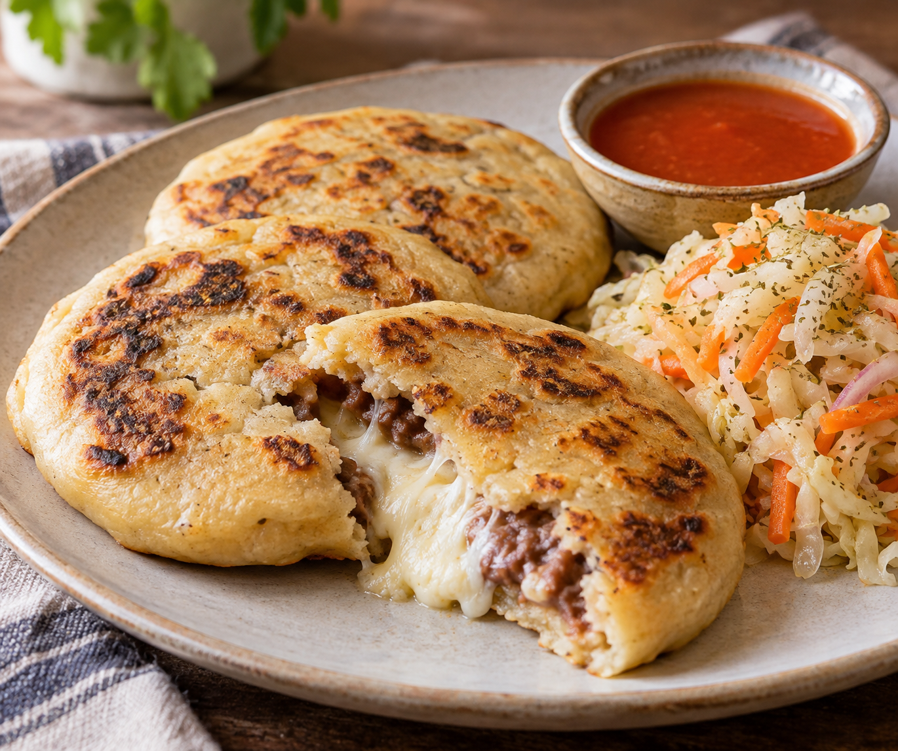

Home
El Salvadorean Bean and Cheese Pupusas

Description
These Salvadoran pupusas are filled with creamy beans and melted cheese, then cooked until golden. Served with tangy curtido and tomato salsa, they’re warm, comforting, and full of flavor.
Pupusa Ingredients
- 2 cups masa harina (corn masa flour, not cornmeal)
- 1½–1¾ cups warm water
- ½ teaspoon salt
- ½ cup thick refried beans, cooled
- 1 cup shredded mozzarella or quesillo
- A little oil for your hands and skillet
Curtido Ingredients
- ½ small cabbage, thinly shredded
- 1 carrot, grated
- ½ small onion, thinly sliced
- ½ cup white vinegar
- ¼ cup water
- 1 teaspoon dried oregano
- ½ teaspoon salt
Salsa Roja Ingredients
- 4 Roma tomatoes, chopped
- ¼ onion, chopped
- 1 garlic clove
- ½ cup water
- ½ teaspoon dried oregano
- Salt to taste
- 1 small jalapeño (optional)
Steps
- Make curtido: Cover cabbage with boiling water for 1 minute, then drain well. Mix with remaining curtido ingredients. Refrigerate for at least 1 hour.
- Make salsa: Simmer tomatoes, onion, garlic, water, and optional jalapeño for 10 minutes. Let cool slightly, blend until smooth, then add oregano and salt. Simmer 5 more minutes.
- Make dough: Mix masa harina, salt, and 1½ cups warm water. Rest 5 minutes. Add more water a tablespoon at a time until soft and smooth, with no cracking.
- Fill: Divide dough into 8 balls. Lightly oil your hands, shape each ball into a cup, and add 1 tablespoon beans and 2 tablespoons cheese.
- Shape: Pinch dough closed around filling. Gently flatten into a disk about 4 inches wide. Smooth any cracks with damp fingers.
- Cook: Heat a lightly oiled skillet over medium heat. Cook pupusas for 4–5 minutes per side, until browned and cooked through.
- Serve: Enjoy hot with curtido and salsa roja.